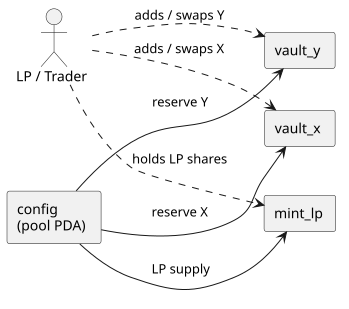
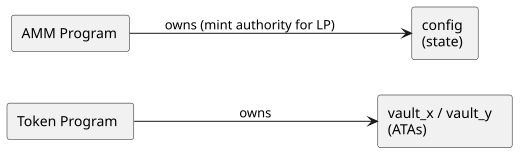
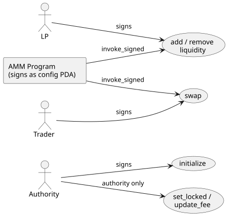
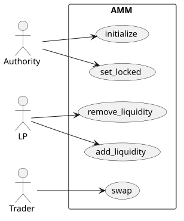

CPAMM: A Constant-Product AMM
This is the finale, and it pulls together every thread in the book: the bundle derive at full stretch, the actors model scaling to a cast that no longer fits on a sticky note, an invariant to assert (not just a balance), and rendered output with real CPI depth.
We’ll build against a standard constant-product AMM (a Uniswap-v2-style x·y=k pool): two token mints, a pool that custodies reserves in two vaults, an LP mint that represents a share of the pool, and the operations that move value around it (initialize, add and remove liquidity, swap, plus a few admin paths).
Two things make this chapter different from Vault and Escrow. First, the field names below are real: they’re the account sets from a working AMM (the capstone AMM dogfood port at programs/amm), so the names you read here (mint_x, vault_y, user_x, and friends) are the names that program’s #[derive(Accounts)] structs actually carry. Second, the AMM is where the bundle derive’s second projection mode, BundleFrom, does real work: a swap’s bundle is assembled from two fixtures (a pool and a user) in one call.
How we model it
A constant-product pool custodies reserves of two tokens (mint_x, mint_y) in two vaults, and mints an LP token (mint_lp) that represents a share of those reserves. Liquidity providers deposit both tokens and receive LP shares; traders swap one token for the other, paying a fee; the product of the two reserves, k = reserve_x · reserve_y, may only grow. A config PDA holds the pool state and is the mint authority for the LP token.
The cast of characters
Vault had three actors and Escrow six; a pool has more, and this is where the actors model shows it doesn’t fall apart as the cast grows, because every account is named.
| Actor | Kind | Role |
|---|---|---|
| authority | user (signer) | creates the pool; can lock it and change the fee |
| LP (alice) | user (signer) | adds and removes liquidity |
| trader (bob) | user (signer) | swaps one token for the other |
| mint_x / mint_y | mints | the trading pair (mint_x < mint_y by pubkey) |
| mint_lp | mint | the LP share token (its mint authority is config) |
| config | PDA (program account) | the pool’s state |
| vault_x / vault_y | PDAs (token accounts) | the reserves |

Ownership
The reserves and the LP mint are owned by the Token program; the AMM program owns only the config state account and signs as the config PDA to move the vaults and mint LP shares.

Authority
Each instruction has its signer: the authority for initialize and the admin paths, an LP for liquidity, a trader for swap. The admin paths (set_locked, update_fee) additionally check the signer against config.authority.

The use cases

The bundle, defined once in the program
Two derives do the work, and they sit in different places.
The first is on a host-only bundle struct in the program’s src/. It lists the pubkeys a family of instructions varies over, and it carries two derives: Bundle (which gives it a Default that fills every field with a throwaway Pubkey::new_unique()) and BundleFrom (which projects the bundle out of source fixtures). The #[from_fixtures(...)] attribute names those fixtures and binds them to short names; here p for the pool and u for the user:
// src/instructions/swap.rs
#[cfg(not(target_os = "solana"))]
#[derive(anchor_litesvm::Bundle, anchor_litesvm::BundleFrom, Copy, Clone)]
#[from_fixtures(p: crate::test_helpers::Pool, u: crate::test_helpers::UserAccounts)]
pub struct SwapBundle {
#[from(u.pubkey())]
pub user: Pubkey,
pub mint_x: Pubkey,
pub mint_y: Pubkey,
pub config: Pubkey,
pub vault_x: Pubkey,
pub vault_y: Pubkey,
#[from(u.ata_x)]
pub user_x: Pubkey,
#[from(u.ata_y)]
pub user_y: Pubkey,
}A bare field (no #[from(...)]) projects from the first declared fixture by name, so mint_x becomes p.mint_x. The #[from(...)] overrides handle the user-side fields and renames (user_x from u.ata_x).
The projection rule is worth stating precisely, because it’s the one thing that bites: a bare field (no #[from(...)]) projects from the first declared fixture, by field name. So mint_x: Pubkey with no annotation becomes p.mint_x. Put your primary fixture first (the pool, here, since it owns most of the accounts) and reach for #[from(...)] only when the source is the other fixture or the names disagree. The macro can’t read the fixture structs at expansion time (proc-macros only see their own input), so if a bare field doesn’t actually exist on the first fixture, you get a rustc field-not-found error pointed at the field by name; that’s your signal to add an override.
The second derive is the BundledPubkeys one you’ve seen since the first test, on the instruction’s #[derive(Accounts)] struct. It’s what pairs SwapBundle with the account list and the args, so build knows which bundle goes with which instruction:
// src/instructions/swap.rs
#[derive(Accounts)]
#[cfg_attr(
not(target_os = "solana"),
derive(anchor_litesvm::BundledPubkeys),
bundled_with(SwapBundle)
)]
pub struct Swap<'info> {
#[account(mut)]
pub user: Signer<'info>,
pub mint_x: Box<InterfaceAccount<'info, Mint>>,
pub mint_y: Box<InterfaceAccount<'info, Mint>>,
#[account(
has_one = mint_x,
has_one = mint_y,
seeds = [CONFIG_SEED, config.seed.to_le_bytes().as_ref()],
bump = config.config_bump,
)]
pub config: Box<Account<'info, Config>>,
#[account(mut, associated_token::mint = mint_x, associated_token::authority = config)]
pub vault_x: Box<InterfaceAccount<'info, TokenAccount>>,
#[account(mut, associated_token::mint = mint_y, associated_token::authority = config)]
pub vault_y: Box<InterfaceAccount<'info, TokenAccount>>,
#[account(mut, associated_token::mint = mint_x, associated_token::authority = user)]
pub user_x: Box<InterfaceAccount<'info, TokenAccount>>,
#[account(mut, associated_token::mint = mint_y, associated_token::authority = user)]
pub user_y: Box<InterfaceAccount<'info, TokenAccount>>,
pub token_program: Interface<'info, TokenInterface>,
}Notice what’s absent from SwapBundle: token_program. The accounts struct declares it as Interface<TokenInterface>, and BundledPubkeys recognizes that type and auto-injects the canonical SPL Token id. So the bundle carries only what a test varies. The host-only machinery is gated #[cfg(not(target_os = "solana"))], the same as every other listing, so none of it ships in the BPF build.
The fixtures the bundle projects from
BundleFrom is only useful if there’s something to project from. The AMM defines two fixtures (both in programs/amm/src/test_helpers.rs), and they map onto the two halves of the cast: shared pool state, and per-actor accounts.
// src/test_helpers.rs
#[derive(Copy, Clone, Debug, AliasMirror)]
pub struct Pool {
pub seed: u64,
#[alias(skip)]
pub mint_x: Pubkey,
#[alias(skip)]
pub mint_y: Pubkey,
#[alias("MintLP")]
pub mint_lp: Pubkey,
#[alias("Pool")]
pub config: Pubkey,
#[alias("VaultX")]
pub vault_x: Pubkey,
#[alias("VaultY")]
pub vault_y: Pubkey,
#[alias("LpVault")]
pub lp_vault: Pubkey,
}// src/test_helpers.rs
pub struct UserAccounts {
pub signer: Keypair,
pub label: String,
pub ata_x: Pubkey,
pub ata_y: Pubkey,
}
impl UserAccounts {
pub fn pubkey(&self) -> Pubkey {
self.signer.pubkey()
}
pub fn ata_lp(&self, mint_lp: &Pubkey) -> Pubkey {
get_associated_token_address(&self.signer.pubkey(), mint_lp)
}Two things to notice. First, Pool carries #[derive(AliasMirror)], the fourth member of the bundle family: it generates an alias_all(&self, ctx) that registers every labelled field in the alias table in one call, so the pool’s accounts name themselves in your rendered output. (mint_x / mint_y are #[alias(skip)] because the harness aliases the global mints once at setup; re-aliasing them per pool would be redundant.) Second, UserAccounts is the actor type for the whole suite: one struct covers LPs, traders, admins, and attackers, with the narrative role carried by the variable name and the label, not by the type.
With those in hand, building a bundle is one call: SwapBundle::from((&pool, &user)). A swap touches ten accounts, but the test never spells ten pubkeys; it hands over a pool and a user, and the derive does the projection.
A second bundle shows the override expression doing real work. AddLiquidityBundle needs the user’s LP ATA, which isn’t a plain field on either fixture: it’s computed from a field of each (the user’s key and the pool’s LP mint). The override expression can reference both bound names:
// src/instructions/add_liquidity.rs
#[cfg(not(target_os = "solana"))]
#[derive(anchor_litesvm::Bundle, anchor_litesvm::BundleFrom, Copy, Clone)]
#[from_fixtures(p: crate::test_helpers::Pool, u: crate::test_helpers::UserAccounts)]
pub struct AddLiquidityBundle {
#[from(u.pubkey())]
pub user: Pubkey,
pub mint_x: Pubkey,
pub mint_y: Pubkey,
pub config: Pubkey,
pub mint_lp: Pubkey,
pub vault_x: Pubkey,
pub vault_y: Pubkey,
pub lp_vault: Pubkey,
#[from(u.ata_x)]
pub user_x: Pubkey,
#[from(u.ata_y)]
pub user_y: Pubkey,
#[from(u.ata_lp(&p.mint_lp))]
pub user_lp: Pubkey,
}#[from(u.ata_lp(&p.mint_lp))] is the cross-fixture override: a method on the user fixture that takes a field of the pool fixture. The bundle stays one source of truth for the instruction’s accounts, and the derivation logic (how an LP ATA is computed) stays where it belongs, on UserAccounts.
The AMM’s AddLiquidityBundle and RemoveLiquidityBundle have identical field sets, and stay separate types anyway: build(add_bundle, vix::RemoveLiquidity { .. }) doesn’t compile, because there’s no BuildableIx<AddLiquidityBundle> for instruction::RemoveLiquidity. Two structurally identical bundles, and the BuildableIx invariant still catches add-versus-remove confusion at the call site.
Setup: a Scenario harness for a cast this size
With a cast this size, the per-scenario setup wants its own home. The AMM suite uses a setup() -> Scenario harness (it lives in programs/amm/tests/common/mod.rs) that deploys the program, mints two deterministic global mints, and hands back a Scenario that knows how to mint new actors and pools on demand:
// tests/common/mod.rs
pub fn setup() -> Scenario {
// The world for the AMM tests: a constant-product pool that trades mint X
// for mint Y. Setup casts the authority that initializes the pool and both
// tokens it trades; the pool's own accounts (config PDA, the two vaults, the
// LP mint) derive from the mints, so a fixture builds them per test.
// `build_with_program` registers `"amm"` as the program's alias.
let mut ctx = AnchorLiteSVM::build_with_program(amm::ID, "amm", AMM_BYTES);
// The authority that can mint either token, cast as a funded signer. Each
// mint is cast against it: `cast_mint` derives the mint at a deterministic
// address (which is what keeps the pool PDAs stable), creates it, and
// registers the leaf alias ("MintX", "MintY").
let mint_authority = ctx.cast_actor_with_sol("authority", DEFAULT_SOL);
let mint_x = ctx.cast_mint("MintX", &mint_authority, 6);
let mint_y = ctx.cast_mint("MintY", &mint_authority, 6);
Scenario {
ctx,
mint_authority,
mint_x,
mint_y,
}
}The test-facing API is a few Scenario verbs, each returning the real fixtures the bundles project from:
impl Scenario {
// A funded actor with `x_balance`/`y_balance` minted into fresh ATAs;
// the label is registered in the alias table and carried on the actor.
pub fn user(&mut self, label: &str, x_balance: u64, y_balance: u64) -> UserAccounts { /* ... */ }
// Initialize a brand-new pool with the given fee, returning its admin
// and the derived `Pool` fixture.
pub fn fresh_pool(&mut self, fee_bps: u16) -> (UserAccounts, Pool) { /* ... */ }
// Add liquidity from a user (wraps the AddLiquidity ix shown below).
pub fn deposit(&mut self, lp: &UserAccounts, pool: &Pool, x: u64, y: u64, min_lp: u64) { /* ... */ }
}Three things in that setup carry the determinism the whole suite rests on:
ctx.cast_actor_with_sol("authority", DEFAULT_SOL)casts the mint authority: a keypair derived from its name (so the same name always yields the same pubkey, and committed output diffs cleanly run to run), funded, and aliased, in one call. Thecast_*vocabulary tracks its names and panics on a duplicate, since the name is the seed and a collision would silently alias two casts to one address.ctx.cast_mint("MintX", &mint_authority, 6)casts each token: it derives the mint at a deterministic address (a stable mint pubkey, and stable vaults and ATAs downstream), creates it under the authority, and registers the leaf alias. The mint names itself as it is cast.- The cast names flow straight to rendered output: each cast registers its alias in the context’s table as a side effect, and
pool.alias_all(&mut ctx)(fromAliasMirror) registers a whole pool’s worth of derived accounts at once, so the trace never shows a raw pubkey. To override a name later (a role rotation, say),ctx.alias(pubkey, "NewName")is last-write-wins.
Each test below threads a Report (md), the same recorder the escrow chapter covers in full: md.step titles a phase, md.snapshot and md.block capture a labelled table (the pool’s vaults, the Config), and md.check is an assertion that also records a pass/fail line. The run emits to target/md-reports/<slug>.md; the collapsed block after each step below is that emitted result.
Init: create the pool
fresh_pool initializes a pool at a fresh seed and returns the admin and the derived Pool. Under the hood it builds a plain InitializeBundle (a Bundle with no BundleFrom, filled field by field) and sends Initialize { seed, fee_bps, authority }:
let (_admin, pool) = world.fresh_pool(30);
md.step("Init: the pool opens at 0.30% fee, unlocked");
md.block("config", world.observe_config(&pool));
let config: amm::state::Config = world.ctx.load(&pool.config);
md.check("fee_bps", 30u16, config.fee_bps);load deserializes the Config account and we read the fee back. (Pool::derive(seed, mint_x, mint_y), which fresh_pool calls, computes the pool’s PDAs and ATAs from the seed and the pair, so the test and the program agree on every address.)
The recorded run: the pool opens at 0.30% fee
config
| field | value |
|---|---|
| seed | 0 |
| fee_bps | 30 |
| locked | false |
| authority | set |
- fee_bps:
30
Add liquidity, then assert the invariant
Liquidity provision deposits both tokens and mints LP shares back. The bundle comes straight from the two fixtures, so the eleven-account list never appears in the test:
let alice = world.user("Alice", 10_000, 40_000);
world.deposit(&alice, &pool, 1_000, 4_000, 1);
md.step("Add liquidity: Alice deposits 1,000 X and 4,000 Y");
md.snapshot("pool vaults", &world.observe_pool(&pool));
md.check("vault X seeded", Some(1_000), world.ctx.svm.token_balance(&pool.vault_x));
md.check("vault Y seeded", Some(4_000), world.ctx.svm.token_balance(&pool.vault_y));After it, the pool holds reserves, and we can read the constant product. The AMM-specific readers (a k() helper, a token-conservation check) don’t belong in the framework, so the test keeps them as local helpers; they read the vault balances with world.ctx.svm.token_balance(&pool.vault_x) (which returns Option<u64>, None if the account doesn’t exist) and compute the invariant. This is the right division of labor: the framework gives you the balances, your test knows what they’re supposed to satisfy.
The recorded run: Alice seeds the pool
pool vaults
| account | balance |
|---|---|
| VaultX | 1000 |
| VaultY | 4000 |
| LpVault | 1000 |
- vault X seeded:
Some(1000) - vault Y seeded:
Some(4000)
Swap: the moment the invariant matters
A swap is where a balance assertion isn’t enough; you have to assert a relationship between balances holds across the transaction. The constant product k = reserve_x · reserve_y must not decrease (it grows slightly, by the fee). And the swap is where SwapBundle::from((&pool, &user)) does the most: ten accounts projected from two fixtures, in one line.
The swap’s direction and amounts ride in a SwapKind enum (ExactInput { amount_in, min_amount_out } or ExactOutput { amount_out, max_amount_in }) plus an a_to_b: bool. The suite wraps the boolean in a readable SwapDir::AtoB.a_to_b() helper, but it’s a plain bool underneath:
let bob = world.user("Bob", 1_000, 0);
let k_before = pool_k(&world, &pool);
world
.ctx
.tx(&[&bob.signer])
.build(
amm::SwapBundle::from((&pool, &bob)),
vix::Swap {
kind: SwapKind::ExactInput { amount_in: 100, min_amount_out: 1 },
a_to_b: true,
},
)
.send_ok();
md.step("Swap: Bob trades 100 X for Y; the constant product holds");
md.snapshot("pool vaults", &world.observe_pool(&pool));
let k_after = pool_k(&world, &pool);
md.check("k must not shrink", true, k_after >= k_before);Vault and Escrow asserted where the tokens went; the AMM asserts that a mathematical property survived the transaction.
(Note we assert k_after >= k_before, not equality: the fee means k ratchets up. And we don’t assert a specific k value, since that depends on the deposited amounts; we assert the relationship. Pinning a literal k would be the same mistake as pinning a literal compute count, see Reading Compute & Fees.)
The recorded run: Bob's swap, and the invariant holds
pool vaults (after the swap: 100 X in, Y out)
| account | balance |
|---|---|
| VaultX | 1100 |
| VaultY | 3640 |
| LpVault | 1000 |
- k must not shrink:
true
The negative path: a locked pool
The AMM has an admin path that locks the pool, after which a swap must fail with PoolLocked. Here send_err_named does the work on the Tx chain: same build, different terminator.
// The authority freezes trading; the pool is now locked.
world.set_locked(&admin, &pool, true);
let bob = world.user("Bob", 1_000, 0);
world
.ctx
.tx(&[&bob.signer])
.build(
amm::SwapBundle::from((&pool, &bob)),
vix::Swap {
kind: SwapKind::ExactInput { amount_in: 100, min_amount_out: 1 },
a_to_b: true,
},
)
.send_err_named("PoolLocked");send_err_named asserts the transaction failed and that the named error appears (substring-matched against the logs and the error field), so a refactor that changes which guard fires breaks the test loudly instead of letting a wrong-but-still-failing path pass. The happy and negative paths share every step up to the terminator. (The AMM’s real suite uses this throughout: its slippage tests use the very same SwapBundle::from((&pool, &bob)), swapping only the SwapKind and the terminator to send_err_named("SlippageExceeded").)
The recorded run: a locked pool rejects swaps
The pool authority can freeze trading. After
set_locked(true), a swap that would otherwise succeed is rejected withPoolLocked, and the reserves are left untouched.
A funded, unlocked pool
| account | balance |
|---|---|
| VaultX | 1000 |
| VaultY | 4000 |
| LpVault | 1000 |
After set_locked(true): the swap is rejected, reserves untouched
config
| field | value |
|---|---|
| seed | 0 |
| fee_bps | 30 |
| locked | true |
| authority | set |
pool vaults
| account | balance |
|---|---|
| VaultX | 1000 |
| VaultY | 4000 |
| LpVault | 1000 |
- pool locked:
true
What the deeper nesting shows
A swap CPIs into the token program twice (input into a vault, output back out), so its CPI tree has real depth. That depth is also where a security story hides, and the tree is what makes it legible.
Start with the lock doing its job. The authority freezes the pool, and an honest trader’s swap bounces:
── amm::Swap ───────────────────────────────────────────────
Transaction signers=[Bob]
└── amm::Swap [1] ✗ …cu signer=Bob
└── Error: PoolLocked
Error: InstructionError(0, Custom(6008))
Fee: 5000 lamports
So far so good: locked == true reads as “the pool is paused.” But that signal protects only the users who send one instruction at a time.
The Double Cross. The authority packs unlock, their own swap, and relock into a single atomic transaction:
// The Scenario verbs send one instruction per tx; the attack needs all three
// in ONE atomic transaction, so drop to program().build_ix(...) and send
// them together. The pool is locked; ix #1 unlocks it, ix #2 swaps while it's
// open, ix #3 relocks, all before any other transaction can be sequenced.
let unlock = world.ctx.program().build_ix(
amm::SetLockedBundle { authority: admin.pubkey(), config: pool.config },
vix::SetLocked { locked: false },
);
let swap = world.ctx.program().build_ix(
amm::SwapBundle::from((&pool, &admin)),
vix::Swap {
kind: SwapKind::ExactInput { amount_in: 100_000, min_amount_out: 1 },
a_to_b: true,
},
);
let relock = world.ctx.program().build_ix(
amm::SetLockedBundle { authority: admin.pubkey(), config: pool.config },
vix::SetLocked { locked: true },
);
let attack = world.ctx.send_instructions(&[unlock, swap, relock], &[&admin.signer]);
md.check("the atomic attack succeeds (this is the bug)", true, attack.is_success());By Solana’s atomicity, no other transaction can be sequenced between those three instructions, so the admin trades through a window that, from everyone else’s perspective, never opened. The captured tree is the smoking gun: three sibling top-level frames, all signed by Admin, the middle one a real swap with its two Token::TransferChecked children:
Transaction signers=[Admin]
├── amm::SetLocked [1] ✓ …cu signer=Admin
├── amm::Swap [1] ✓ …cu signer=Admin
│ ├── Token::TransferChecked [2] ✓ …cu
│ └── Token::TransferChecked [2] ✓ …cu
└── amm::SetLocked [1] ✓ …cu signer=Admin
Fee: 5000 lamports
The test asserts this transaction succeeds, which is exactly the bug it surfaces (issue 001): the require!(!locked) guard bounces an honest swap but not an atomic unlock-first, and the mitigation (a timelock on unlock) is planned, not landed. Reading the rejected swap and the passing sandwich side by side is the whole point; the tree makes the attack legible at a glance, which a wall of base58 never would. The name you chose in the cast list comes back out in the rendered output, on a transaction with real surface area.
Full example
The complete runnable AMM suite (init, add and remove liquidity, swap both directions, the locked-pool and slippage failure cases, and the admin paths) is book/listings/cpamm, which CI builds and tests; clone the repo, cd book/listings/cpamm, and cargo test to run it yourself. The walkthrough above is the annotated tour of how the framework’s pieces compose on a program with real surface area: the two-fixture BundleFrom projection, the Scenario harness with deterministic identities, and the Tx chain sharing its build step across the happy and negative paths.
That’s the book. You’ve gone from an empty Cargo.toml (Part I) to asserting a constant-product invariant on a multi-hop swap, with every account a named actor and every transaction renderable four ways. The reference (rustdoc, via cargo doc --no-deps --open) has the exhaustive API.